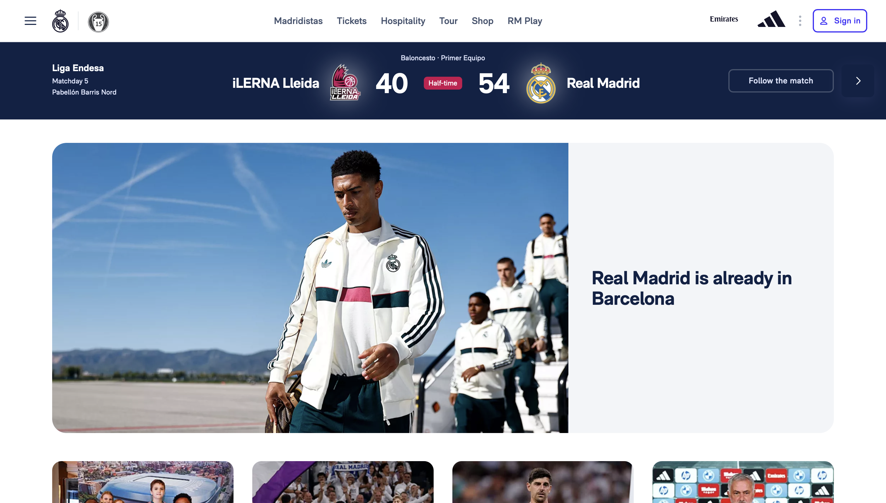

Screenshot

Website URL
Website Name
Real Madrid CF | Official Website
Target Audience
The site is built for Real Madrid fans worldwide, from people following a live match to fans planning a trip to the Bernabéu. I can tell because Tickets, Hospitality, Tour, and Madridistas (the fan membership) sit side by side in the top menu.
Site Organization
The site uses a hierarchical organization, with the home page branching into main sections like Football, Basketball, News, and The Club. Each section then leads to more specific pages, such as First Team, Academy, and Women's Team under Football.
CRAP Design Principles
- Contrast: The live score banner puts huge white numbers (40 and 54) on dark navy, with a small red "Half-time" badge, so the score is the first thing I notice.
- Proximity: The same banner groups the competition details on the left, the teams and score in the center, and the "Follow the match" button on the right.
- Repetition: White, navy, and blue repeat across the menu, the score banner, and the headlines, which makes every section feel like the same brand.
Accessibility Audit Score
The Accessibility Checker gave the site a score of 10 out of 100.
Effectiveness
I could complete common fan tasks accurately, since Tickets, Tour, and Shop are clearly labeled in the top menu. However, the English version still shows Spanish labels like "Baloncesto · Primer Equipo," so a US fan might not realize the live score is for the basketball team.
Efficiency
The "Follow the match" button and the top menu keep the most popular tasks just one click away. However, the large hero photo fills most of the first screen, so I had to scroll before any other news stories appeared.
Engagement
The photo of the players walking off the plane, paired with the bold headline "Real Madrid is already in Barcelona," made me feel part of the build-up to the Clásico. The design feels premium and exciting, which fits one of the world's biggest sports clubs.
Recommendations
- Contrast: Make the small, thin label above the live score bolder and translate it to "Basketball · First Team," so English-speaking fans can actually read it.
- Proximity: Move that label next to "Liga Endesa" on the left, so all the competition details are grouped together instead of floating above the team names.
- Accessibility: Give icon-only buttons, like the hamburger menu, a readable label such as "Open menu," so screen reader users can navigate the site too.